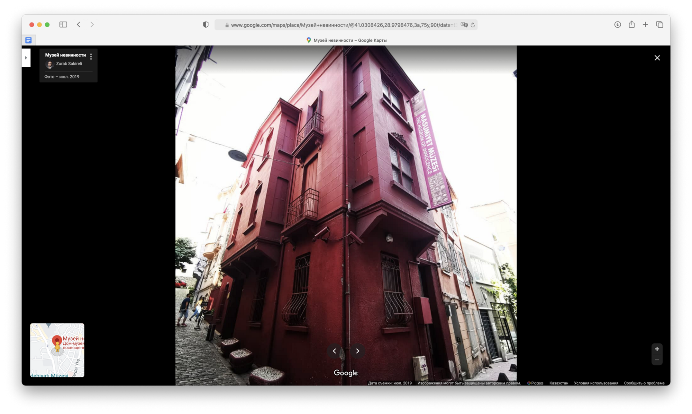

«Музей невинности» Орхана Памука
Искусное переплетение реального и выдуманного в творчестве одного турецкого писателя.
В Стамбуле есть музей, реальное здание, в которое писатель поместил выдуманную историю. Здание наполнено вещами никогда не существовавших героев. В нем все те мелочи из которых когда-то состояла жизнь главной героини книги, любовно собранные ее возлюбленным — кольца, броши, чашки, солонки, обои и даже окурки. Восемь тысяч окурков. Над каждым дата, на стене рядом девять экранов, наглядно демонстрирующих эмоции девушки, с которыми она их тушила. Музей настолько реален, что, не зная того, что описанное в книге выдумано, можно ни разу не усомниться в том, что оно когда-то происходило на самом деле. И это то, чему стоит учиться у автора: любая вещь оживает если ей подарить собственную историю.
Роман «Музей невинности» — это история любви в черно-белом Стамбуле Орхана Памука: бедном и грустном, живущем на пороге Европы и развалинах османской империи. В городе старых полуразрушенных зданий и сгоревших особняков. В потерянном городе. Автор исследует его, тщательно и с любовью отмечая детали, за что и будет впоследствии награжден нобелевской премией. Город на страницах книги живет своей жизнью — меняется, на глазах жителей и пока те спят. Пытается расти, выйти из рамок, стать богаче, современнее. Как и любые перемены, эти не проходят без боли. Но однажды это сделает Стамбул таким, какой он есть сейчас.

Город — один из героев книги, но автор показывает перемены и через его жителей — обычных, далеких от политики, но имеющих определенный вес, чтобы вести других.
Так, в Стамбуле образца 1975 года живет Кемаль, который накануне свадьбы, встречает девушку, с которой вместе рос в детстве. Встречает в магазине, куда заходит купить подарок невесте. Чувства с обеих сторон сводят их линии в постели, значительно этим все усложняя. Кемаль достаточно богат, чтобы позволить себе свадьбу в «Хилтоне» — в самом крутом месте в городе, куда люди приходят, чтобы узнать о новинках, которые завезли из Европы и Америки. На днях у него помолвка с прекрасной Сибель, но его жизнь уже изменилась: Кемаль не представляет жизни без Фюсун — девушки, с которой рос. Роковая встреча меняет жизни нескольких людей напрямую и всех жителей города косвенно — богатые люди всегда на виду, их действия обсуждаются, с них берут пример.
Действия главного героя — даже нездоровое коллекционирование вещей, которых касалась возлюбленная, от чашки до окурка — по замыслу, должны напомнить о том, как читатель сам был влюблен. Как делал глупости, снова и снова. Унижался, но продолжал. Главное отличие в том, где сдался читатель и до чего дошел Кемаль. Смог ли дойти до конца и стать счастливым вопреки обстоятельствам. Или нашел силы отказаться от навязчивой идеи и жить дальше.
«Музей невинности» существует в реальном мире, на последних страницах романа нарисована точная карта и приложен билет на одно бесплатное посещение. Удивительным образом книга «оживляет» музей, а физическое наличие музея «оживляет» историю, рассказанную в книге.
Переплетение сюжета с окружающим миром, камео на себя-писателя, дистанцирующее автора от рассказчика-главного героя романа — примеры мистификации, мастерски обыгранные автором.
Орхан Памук награжден нобелевской премией с формулировкой: автору, «который в поисках меланхоличной души родного города нашёл новые символы для столкновения и переплетения культур» — и формулировка, как всегда, необычайно точна.
Рекомендую тем, кто уже побродил по тротуарам Стамбула — это интересно, сравнить свои мироощущения с теми, что сохранились в памяти писателя.